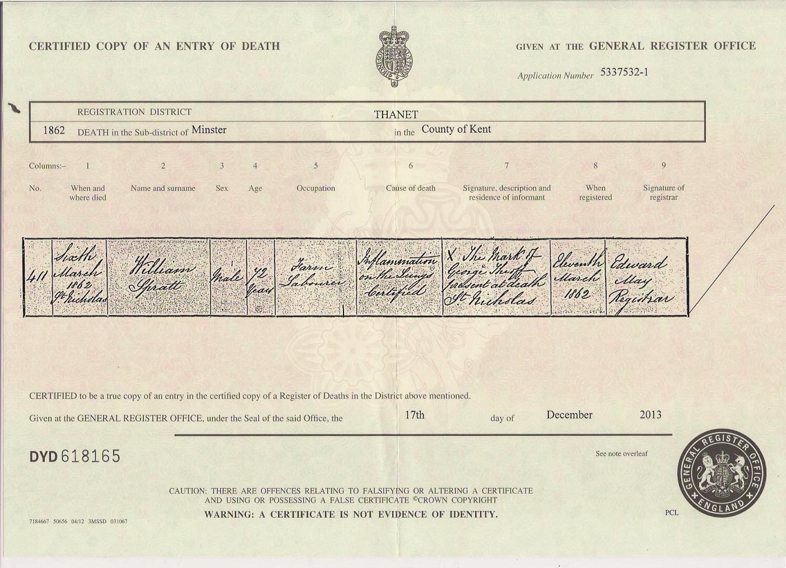
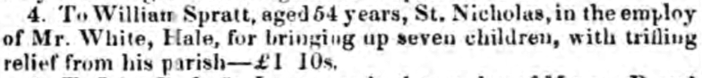
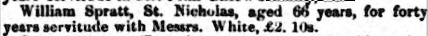
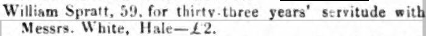
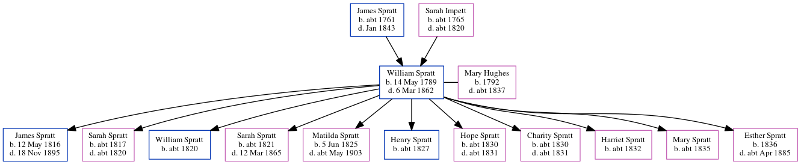

William Spratt 1789 - 1862
[ Home ] | [ Calendar ] | [ Surnames Index ] | [ Errors ] | [ Family History ]A labourer and the child of James Spratt and Sarah Impett, William Spratt, the 3 times great-grandfather of Nigel Horne, was born in Margate, Kent, England on 14 May 17891,2,3, was baptised there at St John the Baptist Church on 31 May 1789 and married Mary Hughes (with whom he had 11 children: James, Sarah, William, Sarah, Matilda, Henry, Hope, Charity, Harriet, Mary and Esther) in St Nicholas-at-Wade, Kent, England on 8 Oct 18155 (KFHS CD 17/St. Nicholas At Wade, Kent, England).
During his life, he was living in Kent on 8 Mar 18158, at The Street in St Nicholas-at-Wade on 6 Jun 18419, in St Nicholas-at-Wade in 18512, and at The Street in St Nicholas-at-Wade on 7 Apr 186110.
He died on 6 Mar 1862 in St Nicholas-at-Wade4 (inflammation of the lungs) and was buried there on 13 Mar 1862 (aged 72yrs. Verified at Margate library 24 Mar 2010)6,7.
Parents
- James was born c. 1761
- Sarah was born c. 1765
Children
- James was born on 12 May 1816
- Sarah was born c. 1817
- William was born c. 1820
- Sarah was born c. 1821
- Matilda was born on 5 Jun 1825
- Henry was born c. 1827
- Hope was born c. 1830
- Charity was born c. 1830
- Harriet was born c. 1832
- Mary was born c. 1835
- Esther was born in 1836
Citations
- 1841 England Census Online publication - Provo, UT, USA: The Generations Network, Inc., 2006.Original data - Census Returns of England and Wales, 1841. Kew, Surrey, England: The National Archives of the UK (TNA): Public Record Office (PRO), 1841. Data imaged from the National
- 1851 England Census Online publication - Provo, UT, USA: The Generations Network, Inc., 2005.Original data - Census Returns of England and Wales, 1851. Kew, Surrey, England: The National Archives of the UK (TNA): Public Record Office (PRO), 1851. Data imaged from the National
- 1861 England Census Online publication - Provo, UT, USA: The Generations Network, Inc., 2005.Original data - Census Returns of England and Wales, 1861. Kew, Surrey, England: The National Archives of the UK (TNA): Public Record Office (PRO), 1861. Data imaged from the National
- England & Wales, FreeBMD Death Index: 1837-1915 Online publication - Provo, UT, USA: The Generations Network, Inc., 2006.Original data - General Register Office. England and Wales Civil Registration Indexes. London, England: General Register Office. © Crown copyright. Published by permission of the Cont
- England, Select Marriages, 1538–1973 Ancestry.com Operations, Inc.
- Public Member Trees Online publication - Provo, UT, USA: The Generations Network, Inc., 2006.Original data - Family trees submitted by Ancestry members.Original data: Family trees submitted by Ancestry members.
- England Deaths & Burials 1538-1991 - Findmypast
- England, Select Marriages, 1538–1973 Ancestry.com Operations, Inc.
- 1841 England, Wales & Scotland Census - Findmypast (was age 50)
- 1861 England, Wales & Scotland Census - Findmypast (was age 71 and the head of the household)
Notes
A tithe award was awarded to him by James White on 10/10/1839 (www.kentarchaeology.org.uk).
Media
William Spratt - death

Kentish Gazette 12-12-1843

Kentish Times and Farmers' Gazette - 8 Dec 1855

Kentish Times and Farmers' Gazette - 9 Dec 1848

Canterbury Baptisms - GBPRS/CANT/B/96009953
Canterbury Baptisms Transcription - GBPRS-CANT-B-96209289
1841 England, Wales & Scotland Census Transcription - GBC-1841-0013960498
England Marriages 1538-1973 - R_848220122
England & Wales deaths 1837-2007 - BMD/D/1862/1/HT/001268/005
1861 England, Wales & Scotland Census - GBC/1861/0003520730
England Births & Baptisms 1538-1975 - R_883183481
England Births & Baptisms 1538-1975 - R_886156467
England Births & Baptisms 1538-1975 - R_885509805
England Deaths & Burials 1538-1991 - R_276599390
Family Tree
Map
Generated by ged2site. Last updated on Jul 3, 2024
Known Issues
www.kentarchaeology.org.uk in notes is not found
www.kentarchaeology.org.uk in notes is not found